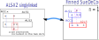

SueDeCoqEx, Franken SueDeCoq
SueDeCoq の成立条件を、新たな方法で定義します。これを用いて SueDeCoq アルゴリズムを拡張します。
SueDeCoqEx2
SueDeCoqの仕組みは、 A2LS と2つのALSを組み合わせた ”Locked” です。SueDeCoqExの成立要件は次のとおりです。
- [SueDeCoqEx の成立条件]
- A2LSと2つのALSがある(ALS_a,ALS_b)。2つのALSに重なりはない。
- A2LSとALS_1にはRCC_1がある。A2LSとALS_2にはRCC_2がある。|RCC_1|>=2、|RCC_2|>=2とする。
- RCC-1とRCC-2に重なりはない。
- |A2LSの数字| - 2 = |A2LSのセル|
A2LSとALS_1は2つ以上のRCCで連結しているので、ALS_1には必ずRCCの1個の数字があります。したがって、A2LSには残りの数字があります。 A2LSとALS_2についても同じです。 すると、A2LSに残された数字の数と、セル数が一致ます。これはA2LSが "Locked" になることを意味します。 従って、”A2LS,ALS_1,ALS_2"が一組の Locked" になります。
[SueDeCoqEx の成立条件]にみられるように、A2LS、ALSには、行・列・ブロックの条件はありません。RCCで連結していることだけが条件です。
 SueDeCoqEx
SueDeCoqExstem AnLS : r45c78 #145789
1st ALS : r5c59 #189 RCC;#19
2nd ALS : r68c8 #358 RCC;#58
exclude : r4c9#9 r6c7#9 r6c9#9 r7c8#35
SueDeCoqEx
stem AnLS : r56c2 #1235
1st ALS : r7c2 r8c1 r9c12 #12345 RCC;#15
2nd ALS : r6c1368 #23579 RCC;#23
exclude : r5c1#4 r7c1#4 r7c3#4 r8c3#4 r8c9#4
SueDeCoqEx
stem AnLS : r7c23456 #1245689
1st ALS : r7c9 #24 RCC;#24
2nd ALS : r5c2 r6c3 #159 RCC;#19
exclude: r4c3#9 r7c1#24
SueDeCoqEx
stem AnLS : r56c8 #1589
1st ALS : r7c8 #18 RCC;#18
2nd ALS : r467c9 #1259 RCC;#59
exclude: r5c7#9 r8c8#8 r8c9#2 r9c9#2
3248615976579438219185273642.143....5.32.6...4..7.....1..6.....8..1746..7..39..1.
641..8329873291645592..4187.8..2.4.1.....92.3...41.8.6......73..6.9..51...714.968
82..6.....6.8...2...32..568641...37.53......4.87...6..4563.97..37...1.......5..3.
（hp"HoDoKu"の問題を使っています。）
Franken SueDeCoq
"SueDeCoqEx"は、自然な延長でさらに拡張します。
A3LSが、互いに素な3つのALS(ALS_a,ALS_b,ALS_c)と、RCCで連結しているとします。これを "Franken SueDeCoqEx"とします。
- [Franken SueDeCoq の成立条件]
- A2LSと3つのALSがある(ALS_a,ALS_b,ALS_c)。3つのALSに重なりはない。
- A2LSとALS_1にはRCC_1がある。A2LSとALS_2にはRCC_2がある。A2LSとALS_3にはRCC_3がある。 |RCC_1|>=2、|RCC_2|>=2、|RCC_3|>=2とする。
- RCC-1、RCC-2、RCC-3に重なりはない。
- |A3LSの数字| - 3 = |A3LSのセル|
Franken SueDeCoqの成立の仕組みは、SueDeCoqExと同じです。
Franken SueDeCoqEx3
stem AnLS : r7c79 r89c9 #2345789
1st ALS : r9c7 #24 RCC;#24
2nd ALS : r8c8 #35 RCC;#35
3rd ALS : r4c7 r5c9 #35 RCC;#78
exclude : r5c7#4 r7c8#345
 Franken SueDeCoqEx3
Franken SueDeCoqEx3
stem AnLS : r7c23 r8c1 r9c2 #1234589
1st ALS : r9c1 #23 RCC;#23
2nd ALS : r8c3 #48 RCC;#48
3rd ALS : r46c3 r5c2 #48 RCC;#19
exclude: r7c1#24
3248615976579438219185273642.143....5.32.6...4..7.....1..6.....8..1746..7..39..1.
641..8329873291645592..4187.8..2.4.1.....92.3...41.8.6......73..6.9..51...714.968
（hp"HoDoKu"の問題を使っています。）
SueDeCoqEx1
"SueDeCoqEx"は、縮小することもできます。これを"SueDeCoqEx0"とします。
ALSとALSが2つのRCCで連結しているとします。これは"ALS-XZ doubly linked"です。
すなわち、ALS-XZ と SueDeCoq の関係を見ることができます。
 SueDeCoqEx1
SueDeCoqEx1
stem AnLS : r79c9 r8c89 #23589
1st ALS : r5c9 #89 RCC;#89
exclude: r4c9#89 r6c9#89
SueDeCoqEx1
stem AnLS : r57c2 #125
1st ALS : r8c1 r9c12 #2345 RCC;#25
exclude: r5c1#4 r6c2#5 r7c1#24 r7c3#4 r8c3#4 r8c9#4
3248615976579438219185273642.143....5.32.6...4..7.....1..6.....8..1746..7..39..1.
641..8329873291645592..4187.8..2.4.1.....92.3...41.8.6......73..6.9..51...714.968
（hp"HoDoKu"の問題を使っています。）
Finned SueDeCoqEx
Fish に Fin付Fish があるように、SueDeCoqにも Fin付SueDeCoq があります。
Fin付Fish は BaseSetにFinが付加したパターンです。CoverSetが、BaseSetとFinを同時にカバーする位置にあるとき
Lockedになります。
SueDeCoqは、AnLSとALSがそれぞ2つのRCCで連結し、
が成り立つパターンです。(その他にも数字要素の重なりがない、などの条件がある)
Fin付SueDeCoq は、ALSの数字配置のパターンがAnLSと整合しない場合です。
以下に、Fin付SueDeCoq(n=1,2,3)の例を示します。
Finは、RCCになれなかった要素です。
AnLSとALSの外部にある要素によって全てFinが否定的に確定すると、Finned SueDeCoqExは破綻します。
従って、全てのFinを否定的に確定する（ALSの外部の）要素は、否定的に確定します。
n=1 Fin付SueDeCoq は、ALS-XZのsinglylinked と一致します。

Finned SueDeCoq の例
 Finned SueDeCoqEx1
Finned SueDeCoqEx1stem AnLS : r57c5 #158
1nd ALS : r4c78 r5c789 #145789 RCC;#1
exclude: r7c8#5
Finned SueDeCoqEx2
stem AnLS : r789c9 #23589
1st ALS : r8c8 #35 RCC;#35
2nd ALS : r4c7 r5c9 #789 RCC#8
exclude: r4c9#9 r6c9#9
Finned Franken_SDCEx3
stem AnLS : r467c2 #346789
1st ALS : r8c2 #39 RCC;#39
2nd ALS : r9c2 #46 RCC;#46
3rd ALS : r4c7 r5c9 #789 RCC:#7
exclude: r5c2#8
3248615976579438219185273642.143....5.32.6...4..7.....1..6.....8..1746..7..39..1.
641..8329873291645592..4187.8..2.4.1.....92.3...41.8.6......73..6.9..51...714.968
（hp"HoDoKu"の問題を使っています。）